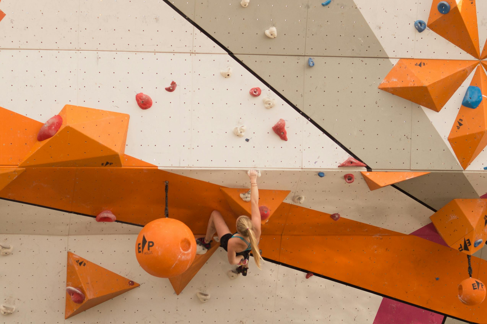

That V5. The one with the tiny crimps and the committing dyno halfway up. It had been taunting me for weeks, a bright purple scar on the otherwise friendly bouldering wall. Every time I walked into the gym, my eyes would inevitably drift towards it, a mix of desire and dread churning in my stomach. V5s had always felt like this mythical barrier, a grade reserved for "real" climbers, and I desperately wanted to be one of them.
My first few attempts were, to put it mildly, disastrous. I couldn’t even stick the first move consistently. My forearms would scream, fingers would uncurl, and I'd peel off, landing on the mat with a deflated sigh. Doubt started to creep in. Maybe V5s were just beyond my current reach. Maybe I should stick to the V3s and V4s where I felt comfortable and strong. But the stubborn part of me, the part that loves a good challenge, just couldn't let it go.
So, I started to get strategic. I watched other climbers, more experienced ones, float up the problem. I asked for beta (climber-speak for advice on the sequence of moves), swallowed my pride, and tried new sequences. Heel hooks I never thought possible, subtle shifts in body weight, learning to "trust the feet" even when the handholds felt non-existent. I started breaking the problem down: section by section, move by move. Each small success – sticking that first crimp, figuring out the foot swap before the dyno – was a tiny victory that fueled my determination.
Then came the heartbreakers – the attempts where I’d make it past the crux, only to flail on the easier top-out moves, gassed and shaky. It became as much a mental battle as a physical one. I had to learn to breathe, to stay calm under pressure, to commit fully even when exhausted and my mind was screaming "you're going to fall!" My training shifted too: more finger strength work on the hangboard, more core exercises, and lots of practicing falling to get over the fear of that committing dyno.
And then, last Tuesday, something just… clicked. I pulled onto the wall, not with expectation, but with a strange sense of calm. The moves flowed. The crimps felt solid. The dyno, which had been my nemesis, felt powerful and controlled. My feet found the holds almost instinctively. Before I knew it, I was matching hands on the final hold. The send. My first V5. A wave of pure, unadulterated joy washed over me. I probably looked like a grinning idiot, but I didn't care. It wasn't just about the grade. It was about the journey – the frustration, the learning, the small wins, and the eventual breakthrough. That V5 taught me more about persistence and problem-solving than any textbook ever could. It taught me the power of community and the importance of believing in yourself, even when you’re peeling off the wall for the tenth time. Now, what’s next? Well, there’s this rather intimidating-looking V6…